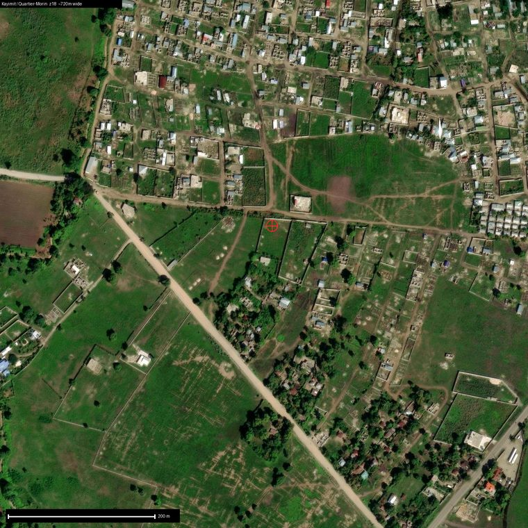

Active · live product
19.68, -72.18
Nord
Quartier-Morin
Kayimit · Haiti's cassava capital
The richest soil in the set, in the town where seven cassava factories already run. The one TapTap shipping a product today.
20→30 youth
5.2% soil carbon
1.3° flat
cassava → flour